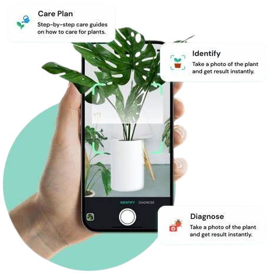

☰
Classification
Resources
Tutorial
Tools
Care
Identify
Contribute
Enquiry
Welcome to the Identify
Your guide to understanding on how to indentify a plant.
How can you identify a plant?
Basic way of Plant Identification
According to
Seattlemet
, here's a how to identify a plant with basic skills:
Leaves Clues:
Shape:
Look at the overall shape.
Edges:
Smooth, toothed, or lobed?
Arrangement:
Simple (one blade) or compound (multiple leaflets)?
Attachment:
Opposite or alternate on the stem?
Plant Identification Clues:
Leaf Arrangement:
Opposite or alternate on the stem?
Leaf Edges:
Smooth or toothed?
Flowers:
Shape, size, and color.
Fruit:
Type (berries, cones, etc.)
Image of a leaf. From
Pexels
.
Using tools to Identify
According to
Seattlemet
, there's a few tools that can help identifying a plant:
Dichotomous Key
Start:
Tree, shrub, or other?
Leaves:
Needles or broad?
Arrangement:
Opposite or alternate?
Margins:
Smooth, toothed, or lobed?
Features:
Berries, flowers, etc.?
Habitat:
Wetlands or dry areas?
Plant Identification Clues:
Dr. Greeny:
Snap a photo for instant plant identification and care tips.
PictureThis:
AI-powered plant identification with detailed species information.
PlantSnap:
Extensive database and advanced image recognition for plant identification.
iNaturalist:
Community-based plant identification through photo uploads.
Leafsnap:
Electronic field guide for identifying tree species from leaf photos.
Garden Answers Plant Identification:
Instant plant information and care advice from photos.
Seek by iNaturalist:
Point your camera at a plant for identification and educational information.
Pl@ntNet:
Identify plants through images and curated databases.

Image of a PlantCam App. From
PlantID
.